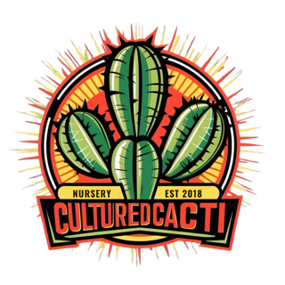

Locally grown cacti and succulents in the Sierra Foothills

Cultured Cacti is a specialty nursery focused on the propagation of rare cacti grown from seeds and clones, as well as California natives and edibles. Nestled among the oak trees of the Sierra Foothills, we grow healthy, hardy plants using custom soil blends and organic methods.
This website and the plants we offer are for collectors, gardeners, and enthusiasts of ethnobotanicals. We carefully label and index all of our plants, pay homage to their history and lineage, and are proud to have sourced the highest quality stock from the best breeders and preservationists in the community.
We are a traditional, old-school nursery and do not accept online payments.
To place an order, simply email your request (including your shipping address) to orders@culturedcacti.com.
We will promptly confirm availability, total price, and estimated shipping time.